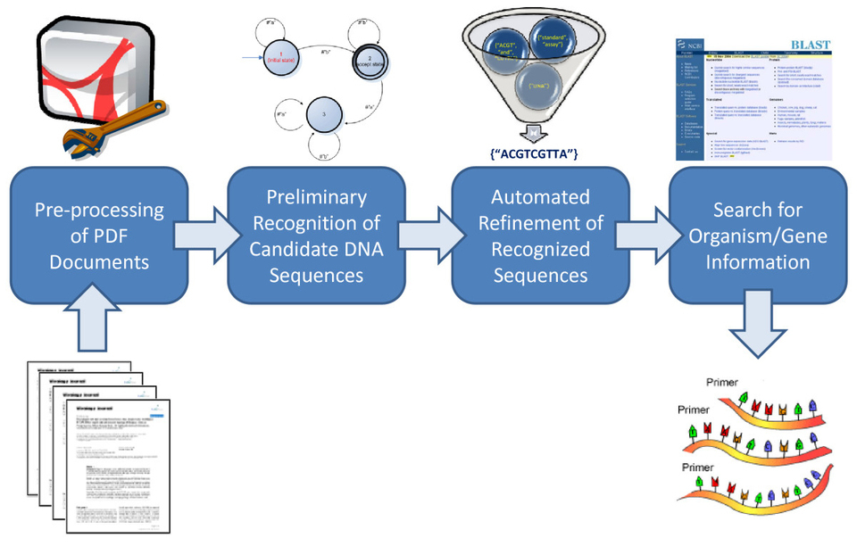

 Un nuevo sistema desarrollado en la Facultad de Informática de la Universidad Politécnica de Madrid permite obtener secuencias genéticas de la literatura científica, con altos valores de precisión (97,98%) y exhaustividad (95,77%). El sistema facilita la tarea de identificación y localización de secuencias de primers y/o probes a los investigadores, ahorrándoles una cantidad de tiempo importante, que pueden a su vez ser invertir en mejorar la calidad asistencial y/o en tareas investigadoras.
Una investigación desarrollada en la Facultad de Informática de la Universidad Politécnica de Madrid permite la detección y anotación de secuencias genéticas pertenecientes a microorganismos responsables de enfermedades infecciosas que aparecen en un manuscrito dado, aceptando varios formatos para dicho artículo, entre ellos el PDF, el sistema de representación de documentos más utilizado por los investigadores.
Además, la investigación ha reutilizado las mismas técnicas de detección de secuencias genéticas para crear un índice con todos los artículos de PubMed Central PMC, la base de datos bibliográficos que proporciona libre acceso a obras científicas biomédicas y biológicas. La investigación ha asociado a cada artículo de PubMed Central las secuencias genéticas detectadas.
Según publica la FIUPM en un comunicado, el método de detección de secuencias presenta unos altos valores de precisión (97,98%) y exhaustividad (95,77%). El sistema de anotación ha encontrado satisfactoriamente el nombre del microorganismo asociado a las secuencias en un alto porcentaje de ocasiones: se ha podido anotar correctamente las secuencias con el nombre del organismo en un 83,29% de los casos. Hay que destacar al respecto que en el 15,45% de los casos, esta anotación era imposible, ya que las secuencias a anotar no pertenecían a microrganismos responsables de enfermedades infecciosas.
Respecto a los nombres de gen, la investigación sólo ha podido encontrarlos en un 44,32% de los casos debido a que la información a recuperar no está siempre contenida en las bases de datos e, incluso, puede no ser conocida todavía.
Por último, la investigación ha reutilizado la detección y anotación de secuencias genéticas para asociar a cada artículo de PubMed Central las secuencias genéticas que contiene. En el momento de la creación del índice, la cantidad de artículos descargables de PMC era de 176.672. Como se disponía de una versión de cada artículo en formato XML, se utilizó este formato de representación porque reduce los tiempos respecto al tratamiento de artículos en PDF.
Aunque el sistema desarrollado en la FIUPM es completamente funcional y ofrece resultados útiles y precisos, abre nuevas vías de investigación para su perfeccionamiento tanto en términos de funcionalidad como de mejora de resultados y de rendimiento.
Los resultados de esta investigación se han publicado en la revista BMC Bioinformatics. En ella están implicados miembros del Departamento de Inteligencia Artificial, el Grupo de Informática Biomédica y el Departamento de Lenguajes y Sistemas Informáticos, todos ellos de la FIUPM. Asimismo, ha participado en la investigación la unidad de Bioinformática y salud pública del Instituto de Salud Carlos III.
Por la FIUPM, sus autores son Miguel García-Remesal, Alejandro Cuevas, Guillermo de la Calle, Diana de la Iglesia, David Pérez-Rey, José Crespo y Víctor Maojo. Por el Instituto de Salud Carlos III firman Victoria López-Alonso, Guillermo López-Campos y Fernando Martín-Sánchez.
Anteriormente, esta investigación había dado origen a otro artículo en la revista líder del área de la Bioinformática, Bioinformatics, sobre la aplicación PubDNA Finder, el primer buscador de artículos científicos con secuencias de ácidos nucléicos del que la Facultad de Informática de la UPM informó en otra nota de prensa.
Ir al artículo original
Para el fondo #FEEFB1
#685D47
#913420
#1E2729
#C1D9C5